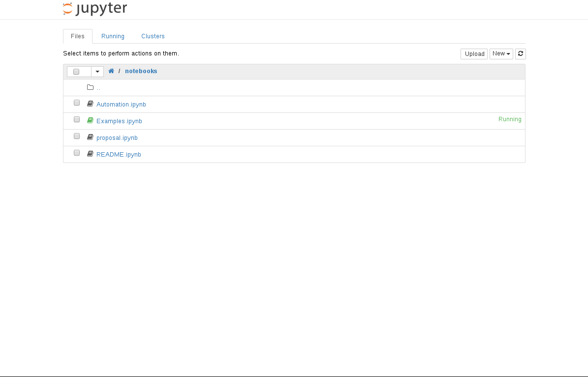

nbpresent
Drag the
nbpresent bookmarklet
to your browser's bookmark bar...
Click it in a running notebook, such as
tmpnb
Start remixing your notebook markdown, code, output and widgets into slides.
Learn more on
Github
!
